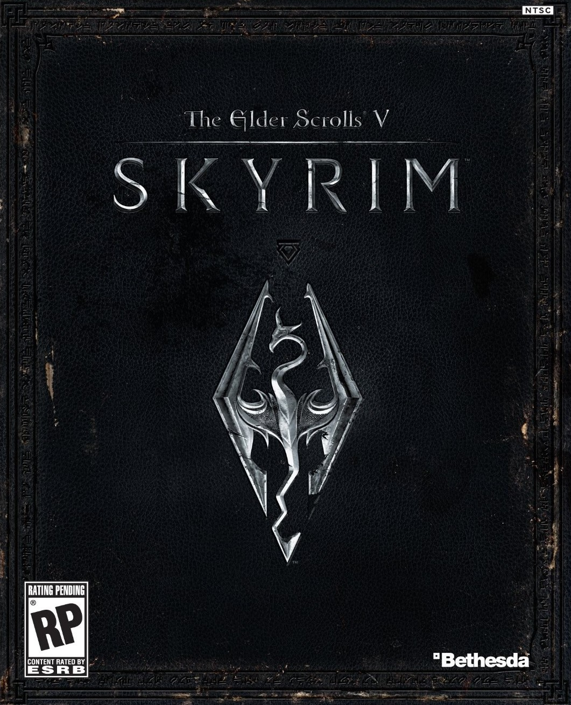

I participate in National Honor Society, Boy Scouts, Golf, and Science Bowl. I have been patrol leader for 18 months as a Boy Scout,
and am currently a Life Scout. I also participated in around 80 hours of community service thus far.

Hawk Varsity Golf team, 2019. I am on the far right.
My miscellaneous interests include fantasy football and video games. I do not spend much time in person with friends outside of school,
but that is an extension of my introverted nature.
Skyrim, the game I played for hours on end as a kid.